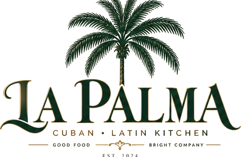
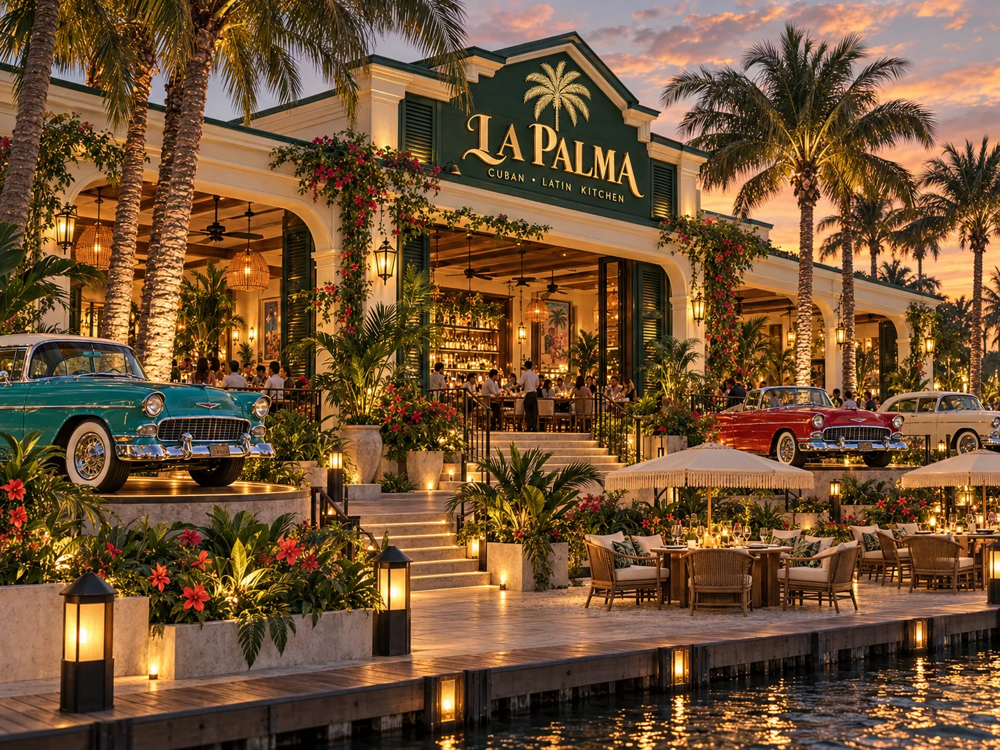
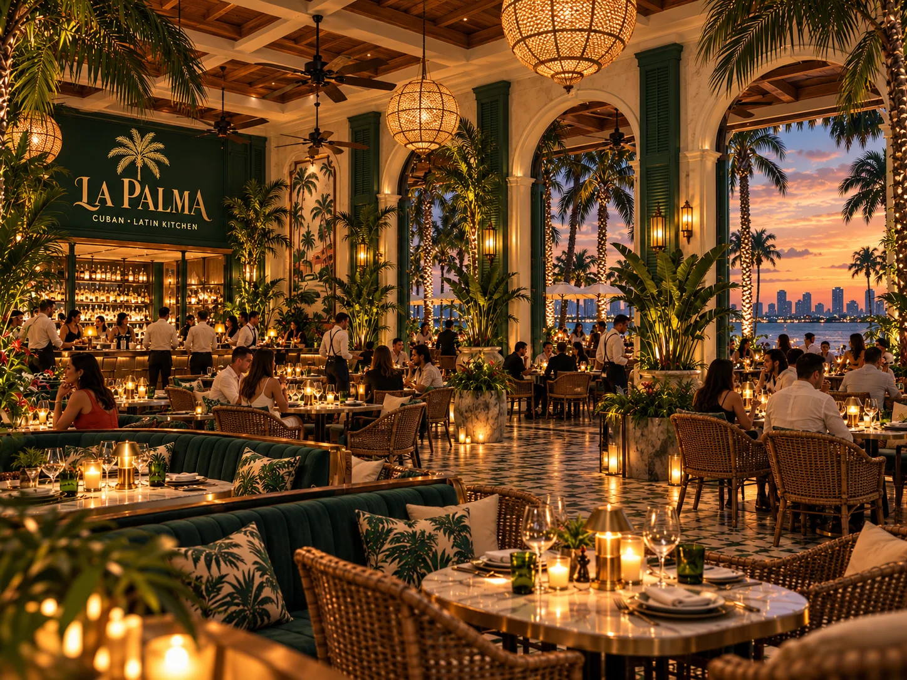
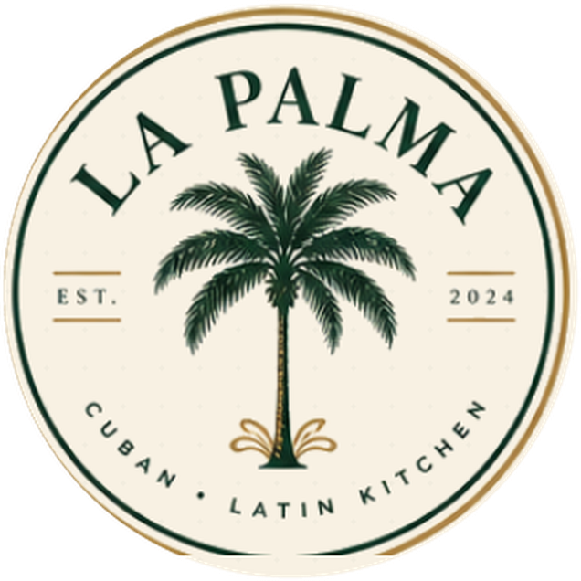

Group Dining
Long tables and intimate groupings for birthdays, rehearsal dinners, family celebrations and team dinners.


Celebrations · dinners · hosted nights
Celebrate over dinner, cocktails and the water, with space for the night to become as intimate or lively as you want it to be.
Private gatherings
From rehearsal dinners and birthdays to cocktail receptions and full-venue celebrations, La Palma keeps the evening in one beautiful waterfront setting.

Make it yours

Private events team
Email events@lapalmabahia.com or call (850) 555-0148. Include your preferred date, approximate party size and the kind of evening you have in mind.